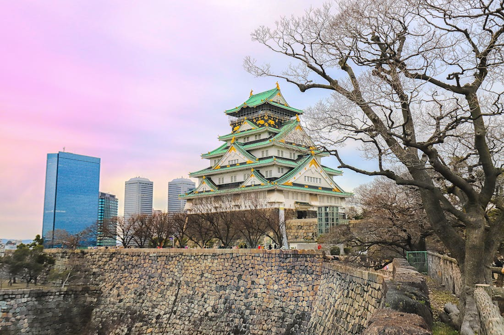

Route 01 · Food & Culture
OsakaFood Circuit
Neon canals, smoky market halls, and hole-in-the-wall izakayas — the real Osaka that guide books don't show you.
Scroll

Dōtonbori

Osaka Castle

Tsutenkaku

Canal Cruise
Neon canals, smoky market halls, and hole-in-the-wall izakayas — the real Osaka that guide books don't show you.

Photos taken with our guests across Osaka's most vibrant streets and markets.


Every stop is timed to avoid crowds and hit each place at its best moment.
Usually responds within 2 hours · WhatsApp preferred